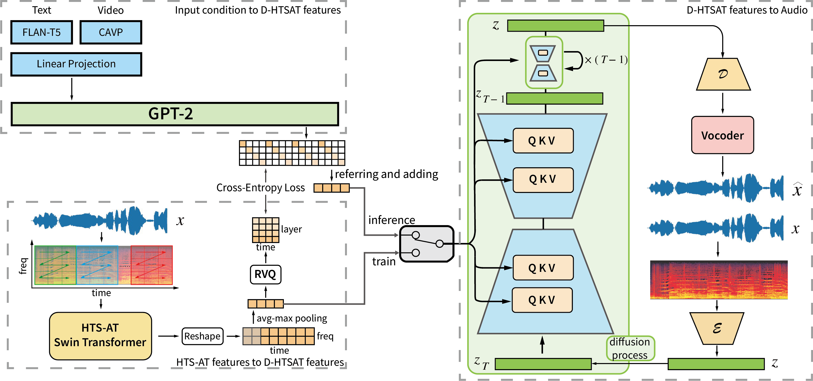

Diffmitator: Classification Feature-Guided Audio Generation with Training-free Timbre Control
Anonymous
Abstract
The demand for deep learning-based audio generation has grown significantly in various multimedia and gaming domains, but its application to sound effect generation remains largely limited due to several challenges. Although previous work has used diffusion models to address the cross-modal sound effect generation task, two issues remain: the trade-off between diffusion model performance and training cost, and the timbre inconsistency between reference and generated audio. To address these challenges, we propose two methods: D-HTSAT and C-Copaint. To reduce the difficulty of model training, we present D-HTSAT, an audio classification feature-based model that can decompose the audio generation task into semantic content generation and timbre content generation sub-tasks. C-Copaint is a training-free method that addresses the issue of inconsistent timbre generation by transforming the problem into a conditional inpainting task, which ensures consistent timbre through monitoring during the DDIM denoising process. Based on D-HTSAT and C-Copaint, we build Diffmitator -- a model that combines language model and diffusion model for conditional sound effect generation. Objective and subjective experiments demonstrate that Diffmitator effectively improves the quality of generated sound effects compared to existing methods. Demos are available at: https://diffmitator.github.io/
Pipeline

Figure 1: Diffmitator is composed of GPT-2, LDM, VAE on the Mel-spectrogram and a vocoder to recover audio signals in time domain. GPT-2 generates D-HTSAT features based on the input conditions, thereby completing audio semantic content generation. The VAE maps the audio Mel-spectrogram to a smaller latent feature space. LDM performs denoising operations in this latent space, obtaining the latent feature representation of the target audio based on the D-HTSAT features generated by GPT-2.
Text-to-Audio Generated Results
Video-to-Audio Generated Results
C-Copaint Generated Results
Acknowledgement
Thanks for the excellent open-source project demo page template provided by AudioLDM.